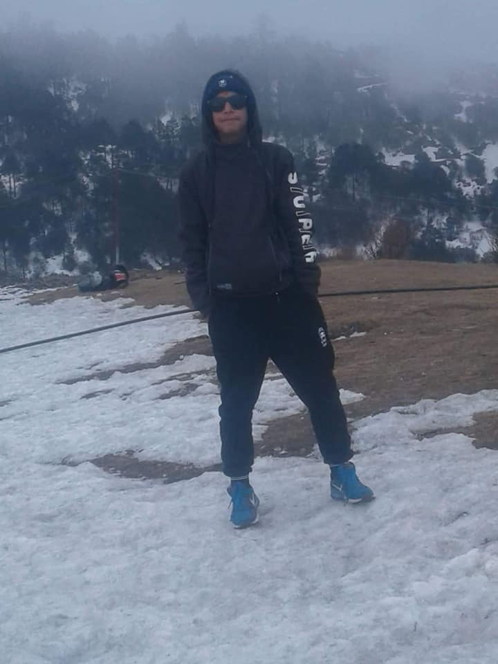
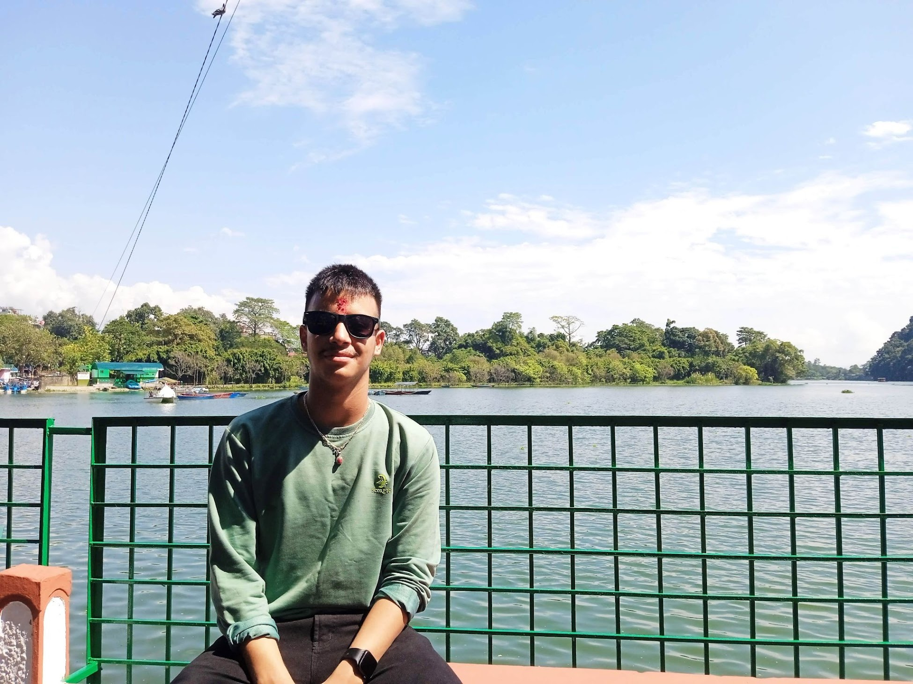
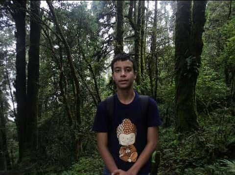
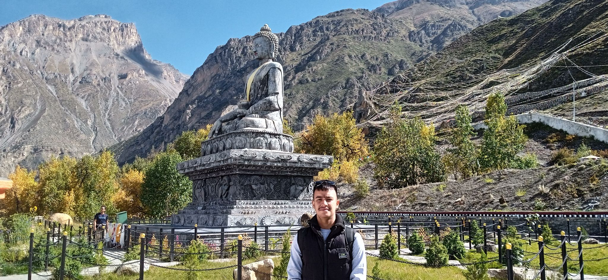
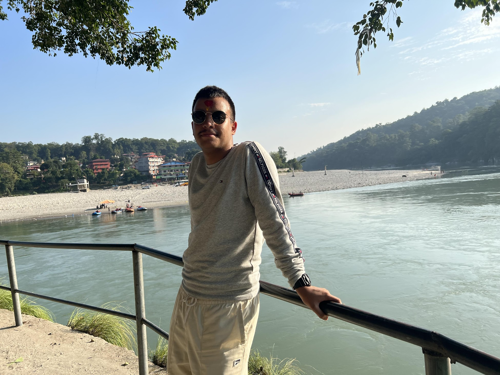
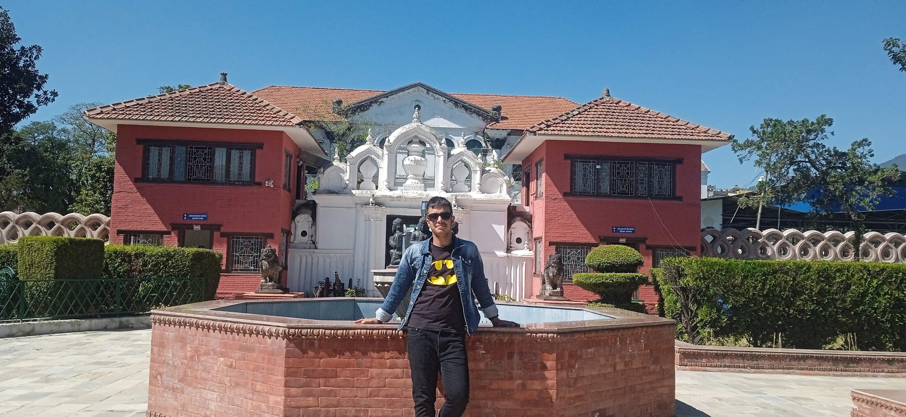

A Journey to Kalinchowk: Embracing Nature's Splendor
Date: 24th March 2020

Nestled high in the mountains of Nepal, Kalinchowk is a hidden gem that offers a breathtaking escape from the ordinary. My recent journey to this enchanting destination was nothing short of magical, filled with moments of awe and discovery.
The Road to Kalinchowk
As I embarked on my adventure, the excitement bubbled within me. The journey to Kalinchowk begins with a scenic drive from Kathmandu to Charikot. The winding roads carved into the mountainside were adorned with vibrant green hills, terraced fields, and glimpses of rural life. Each twist and turn revealed new vistas, igniting my anticipation for the beauty that awaited me.
Arriving at Kalinchowk
Upon reaching Kalinchowk, I was immediately captivated by its serene atmosphere. The crisp mountain air invigorated my senses, and the towering peaks surrounding the area stood majestically against the azure sky. Kalinchowk is known for its temple dedicated to Goddess Kali, which is perched atop a hill. The temple itself is a sight to behold, adorned with colorful prayer flags that flutter in the breeze, creating a kaleidoscope of colors against the backdrop of nature.
The Thrill of the Cable Car Ride
One of the highlights of my trip was the thrilling cable car ride to the temple. As I ascended, the panoramic views unfolded like a beautiful painting. The valleys below, dotted with villages, and the distant snow-capped mountains filled my heart with joy. The ride offered a unique perspective of the landscape, and I felt as if I was soaring through the heavens, surrounded by nature’s beauty.
A Spiritual Experience
Reaching the temple was a profound experience. The sacred ambiance, enhanced by the rhythmic sound of bells and chanting, enveloped me in a sense of peace. I took a moment to reflect and connect with the divine. The view from the temple was equally awe-inspiring, showcasing the vastness of the Himalayas stretching into the horizon. It was a reminder of how small we are in the grand scheme of things, yet how significant each moment can be.
Nature’s Embrace
After visiting the temple, I decided to explore the surrounding trails. The crisp mountain air, fragrant with pine and wildflowers, invigorated my spirit. As I walked, I marveled at the diverse flora and fauna, each step revealing new wonders. I encountered fluttering butterflies, chirping birds, and the distant sound of flowing streams—each element contributing to the symphony of nature.
The tranquility of Kalinchowk allowed me to escape the noise of daily life. I found a peaceful spot to sit, close my eyes, and absorb the beauty around me. The gentle rustling of leaves, the distant echo of laughter from fellow travelers, and the warmth of the sun on my face created a perfect moment of serenity.
The Magic of Sunset
As the day came to an end, I made my way back to the viewpoint to witness the sunset. The sky transformed into a canvas of warm oranges, pinks, and purples, casting a golden glow over the landscape. The mountains, once fierce and stoic, softened under the fading light. I felt a deep sense of gratitude for the beauty of nature and the moments I had experienced.
Conclusion
My journey to Kalinchowk was not just a trip; it was a profound reminder of the beauty that surrounds us and the peace that nature offers. Each moment spent in this magical place left an imprint on my heart. As I headed back home, I carried with me not only memories of breathtaking views but also a renewed appreciation for life and the adventures that await. Kalinchowk, with its immense beauty, truly calls to the wanderer in all of us, offering spiritual connection, adventure, and moments of deep reflection in its enchanting embrace.
Journey to Pokhara
Date: April 5, 2021

The world had changed dramatically since the onset of the COVID-19 pandemic, with travel restrictions altering our daily lives. Despite the challenges, my father and I found ourselves on an unexpected adventure to Pokhara, Nepal, on April 5, 2021, for an inauguration program. The journey felt surreal, a blend of excitement and apprehension, as we embarked on a road less traveled during these uncertain times.
The Drive to Pokhara
As we set off from Kathmandu, the early morning sun painted the landscape with a golden hue. The normally bustling highways were quieter, with fewer vehicles on the road. This new sense of stillness lent a peaceful aura to the journey. My father and I shared stories and laughter, reminiscing about past trips while absorbing the breathtaking scenery that unfolded before us—rolling hills, lush green fields, and distant mountains, each vista a reminder of Nepal’s natural beauty.
Arriving in Pokhara
Upon arriving in Pokhara, we were greeted by the fresh, crisp air that carried the scent of pine and water. The city, usually bustling with tourists, felt different—serene and tranquil, as if it were holding its breath. The inauguration program was the primary reason for our visit, and it was heartening to see the community coming together, masked yet hopeful.
Exploring Fewa Tal
After the inauguration, we decided to explore Fewa Tal. The iconic lake shimmered under the afternoon sun, with the majestic Annapurna range as its backdrop. We rented a small boat and paddled across the tranquil waters, our reflections dancing on the surface. As we glided along, I couldn’t help but feel a sense of peace wash over me. The gentle lapping of the water against the boat was a welcome escape from the chaos of the world outside.
A Visit to Vegnas Tal
Our next stop was Vegnas Tal, a lesser-known gem. The tranquility here was palpable. Surrounded by lush vegetation and the sounds of chirping birds, it felt like a hidden paradise. We strolled along the lakeside, taking in the sights and sounds of nature. This serene environment provided a perfect backdrop for reflection, allowing us to disconnect from the stress of the pandemic, even if just for a moment.
The View from Sarangkot
No visit to Pokhara would be complete without a trek to Sarangkot. As we made our way up, the anticipation built with each step. The view from the top was nothing short of breathtaking; the panoramic vista of Pokhara and the surrounding mountains was awe-inspiring. It reminded me of the resilience of nature and our own ability to find beauty, even in difficult times. The sunset painted the sky in hues of orange and pink, a stunning end to our day.
The Serenity of Davis Lake
Our final stop was Davis Lake, a tranquil spot that o
ffered a sense of solitude. Here, we sat quietly, letting the moment wash over us. The peaceful waters mirrored the sky, and the surrounding greenery made it feel like we were in a secluded oasis. As we shared our thoughts about life and the pandemic, it was a moment of connection—both with each other and with nature.
Reflections
As we made our way back home, I felt a profound sense of gratitude for the opportunity to travel, even amidst restrictions. This journey with my father to Pokhara was more than just an escape; it was a reminder of the beauty that still exists in the world and the importance of cherishing the moments we have together. The pandemic may have altered our lives, but it cannot diminish the joy of exploration and the bonds we share.
This journey will remain etched in my memory, a beacon of hope during challenging times, and a testament to the enduring spirit of travel..
A Journey to Pachpokhari: Nature's Hidden Sanctuary
Date:28th september 2021

Located in the heart of Sindupalchowk district, Pachpokhari is a breathtaking destination that offers an exquisite blend of natural beauty and tranquility. My recent adventure to this serene locale was a much-needed escape, filled with stunning landscapes and moments of reflection.
The Journey Begins
The trip to Pachpokhari is an adventure in itself. Setting off from Kathmandu early in the morning, the winding roads led us through lush green hills and charming villages. The rhythmic sound of the engine accompanied by the scenic views was a perfect prelude to the enchanting beauty that awaited us. As we ascended, the bustling city life faded away, replaced by the soothing sounds of nature.
Arriving at Pachpokhari
Upon arriving in Pachpokhari, I was greeted by a breathtaking landscape that felt like a slice of paradise. The crystal-clear lakes, surrounded by verdant hills and majestic mountains, were truly awe-inspiring. The serenity of the place enveloped me, and I could feel the weight of the world lifting off my shoulders. The two pristine lakes, known as “Pachpokhari” or “Five Lakes,” were shimmering jewels nestled amidst the mountains, reflecting the beauty of the sky above.
Exploring the Lakes
As I walked along the banks of the lakes, I marveled at their tranquil beauty. The surrounding flora was vibrant and alive, with colorful flowers blooming in abundance. I took a moment to sit by the water's edge, absorbing the peaceful ambiance and listening to the gentle lapping of the waves. The cool breeze caressed my face, and the chirping of birds created a symphony that resonated deep within me.
A Spiritual Journey
Pachpokhari is also home to sacred sites, including ancient temples dedicated to Hindu deities. I visited the small temple near the lakes, where locals often come to offer prayers and seek blessings. The serene atmosphere of the temple, adorned with colorful prayer flags, was a reminder of the spiritual significance of this place. I took a moment to reflect and connect with my inner self, feeling a profound sense of peace wash over me.
Immersing in Nature
After my spiritual visit, I decided to explore the hiking trails that wound through the surrounding hills. The lush greenery and diverse wildlife made each step an adventure. I encountered breathtaking views of the Himalayan range, with snow-capped peaks standing tall against the azure sky. The trails were filled with the scent of pine and wildflowers, and I felt a deep connection to nature with every step I took.
The Magic of Sunset
As the sun began to set, I made my way back to the lakeside to witness the breathtaking sunset. The sky transformed into a canvas of brilliant oranges, pinks, and purples, casting a golden glow over the lakes. The reflection of the colorful sky in the water was a sight I will never forget. It felt like a moment frozen in time, a perfect culmination of the day’s beauty and serenity.
Conclusion
My journey to Pachpokhari was not just a visit; it was a profound experience that deepened my appreciation for nature and its wonders. Each moment spent in this hidden sanctuary left an indelible mark on my heart. As I headed back home, I carried with me not only memories of stunning landscapes but also a renewed sense of peace and gratitude. Pachpokhari, with its enchanting beauty, beckons all who seek solace in nature and reminds us of the serenity that lies within the embrace of the mountains.
A Journey to Muktinath: Sacred Waters and Majestic Mountains
Date: 18th october 2022

My journey to Muktinath, a sacred pilgrimage site nestled in the majestic Annapurna region, was an unforgettable experience shared with my father and a close colleague. We set out from Kathmandu in a sturdy Scorpio, eager to embrace the adventure that lay ahead. The excitement was palpable as we embarked on this spiritual and scenic journey.
Setting Off from Kathmandu
As we drove out of Kathmandu, the bustling city slowly gave way to the serene beauty of the countryside. The rhythmic hum of the Scorpio engine and the laughter of my father and colleague filled the car, creating an atmosphere of camaraderie. The winding roads took us through lush green hills, terraced fields, and quaint villages, each turn revealing a new aspect of Nepal’s diverse landscape. The anticipation of reaching Muktinath fueled our excitement as we navigated the picturesque routes.
Arrival in Pokhara
After a delightful journey, we reached Pokhara, where we paused to soak in the beauty of Phewa Lake. The tranquil waters, framed by the stunning backdrop of the Annapurna range, provided a perfect setting for a brief respite. We strolled along the lakeside, indulging in local delicacies and taking in the vibrant atmosphere. The beauty of Pokhara was a fitting prelude to the spiritual journey that awaited us.
Continuing to Muktinath
Refreshed and rejuvenated, we continued our journey towards Muktinath. The road became increasingly rugged as we ventured deeper into the mountains. The Scorpio handled the challenging terrain with ease, and we were treated to breathtaking views of towering peaks and deep valleys. Each passing moment brought us closer to our destination, and the majestic mountains seemed to beckon us closer.
The Spiritual Essence of Muktinath
As we arrived in Muktinath, the spiritual energy in the air was palpable. The sacred site, revered by both Hindus and Buddhists, is home to the famous Muktinath Temple, dedicated to Lord Vishnu. The vibrant prayer flags fluttered in the mountain breeze, and the sound of chanting filled the air. We made our way to the temple, where the divine ambiance enveloped us, and I felt a deep connection to the spiritual significance of this place.
A Ritual of Purification
One of the unique aspects of Muktinath is the 108 water spouts known as the *Muktidhara*, which flow from the mountains. Pilgrims come to bathe in these waters as a form of purification. My father and colleague decided to join in the ritual, and I followed suit. The icy water was shocking yet invigorating, and as I stood beneath the spouts, I felt a sense of renewal wash over me, cleansing both body and spirit.
Exploring the Surroundings
After the purification ritual, we took some time to explore the surrounding area. The views were nothing short of breathtaking, with the snow-capped peaks of the Himalayas standing majestically against the sky. We wandered through the rocky terrain, encountering local flora and fauna, and took a moment to reflect on the beauty of nature that enveloped us. The peace and tranquility of Muktinath provided the perfect backdrop for introspection and connection with nature.
Conclusion: A Journey of Spiritual Awakening
Our journey to Muktinath was not just a physical adventure; it was a spiritual awakening that deepened my appreciation for the beauty of our culture and landscapes. Sharing this experience with my father and colleague enriched the journey, creating lasting memories filled with laughter and reflection. As we made our way back to Pokhara, I carried with me the sacred essence of Muktinath, a reminder of the profound connection between nature and spirituality. This journey was truly a celebration of life, faith, and the breathtaking beauty of the Himalayas.
A Journey to Chitwan: Wildlife and Family Adventures
Date:12th October,2023

My recent trip to Chitwan National Park was a delightful escape filled with adventure, nature, and cherished family moments. Accompanied by my father, mother, sister, and my father’s colleague, we set off from Kathmandu in our trusty Scorpio, eager to explore the enchanting landscapes of Sauraha and the tranquil waters of the Narayani River.
Hitting the Road
The journey began early in the morning, with the sun peeking over the hills as we departed from Kathmandu. The excitement in the Scorpio was contagious as we traversed the winding roads, leaving the hustle and bustle of the city behind. Lush green hills and terraced fields dotted the landscape, creating a picturesque backdrop for our adventure. My sister’s laughter and my mother’s cheerful chatter filled the air, making the ride feel even more special.
Arrival in Sauraha
After several hours of driving, we finally arrived in Sauraha, a charming village on the edge of Chitwan National Park. The warm, welcoming atmosphere greeted us as we checked into our lodge. With its rustic charm and proximity to nature, the lodge was the perfect place to unwind after our journey. We quickly freshened up and headed out to explore the nearby surroundings, eager to witness the beauty of Chitwan.
The Majestic Narayani River
Our first stop was the Narayani River, which flows gracefully alongside Sauraha. The sight of the shimmering waters and the sound of gentle ripples brought a sense of calm and serenity. We took a leisurely stroll along the riverbank, enjoying the fresh air and the stunning views of the lush forests that lined the water. My father, ever the nature enthusiast, shared interesting facts about the river’s ecosystem, deepening our appreciation for this natural wonder.
Wildlife Safari Adventure
One of the highlights of our trip was the wildlife safari in Chitwan National Park. The following day, we hopped into a jeep and ventured into the heart of the park. The thrill of spotting wildlife in their natural habitat was exhilarating. We encountered herds of deer, playful monkeys, and, if we were lucky, the majestic one-horned rhinoceros. My sister and I couldn’t contain our excitement, and the joy of seeing these incredible creatures brought us closer together as a family.
Connecting with Nature
After our safari, we embarked on a guided canoe ride along the Narayani River. The gentle paddling allowed us to immerse ourselves in the beauty of the surroundings. As we glided along the water, we were greeted by diverse bird species, including the elegant kingfishers and majestic storks. My mother, an avid bird watcher, was in her element, capturing moments with her camera while we all shared stories and laughter.
A Cultural Evening
In the evening, we returned to our lodge to rest before heading out for a traditional Tharu cultural program. The vibrant dances and music provided a glimpse into the rich heritage of the Tharu people. My family and I joined in the festivities, laughing and dancing along with the performers. The evening was a beautiful reminder of the cultural diversity that Nepal holds, and we felt grateful to be part of it.
Conclusion: A Memorable Family Escape
As we made our way back to Kathmandu, I reflected on the wonderful memories we created during our journey to Chitwan. The laughter, the wildlife, the beauty of the Narayani River, and the connection with my family made this trip unforgettable. Each moment spent in Chitwan was a celebration of nature, culture, and family bonds. I returned home not just with souvenirs but with a heart full of joy and a deeper appreciation for the natural wonders of Nepal.
A Journey Through History: Exploring the National Museum of Nepal
Date: 12th June, 2024

My recent visit to the National Museum of Nepal was an enlightening experience filled with history, culture, and stunning artifacts. Accompanied by my family, we set off to explore the rich heritage and stories that this remarkable museum has to offer.
Getting There
The journey to the National Museum, located in Chhauni, was filled with anticipation. As we drove through the bustling streets of Kathmandu, the excitement grew. Upon arrival, we were greeted by the museum's impressive architecture, a blend of traditional and modern design that set the tone for our exploration.
First Impressions
Walking through the gates, we felt a sense of awe as we entered the expansive grounds. The lush gardens and carefully curated outdoor exhibits provided a serene atmosphere. We started our visit at the main building, where the history of Nepal was beautifully displayed through various artifacts and exhibitions.
Exploring the Galleries
Each gallery offered a unique glimpse into different aspects of Nepalese culture and history. From ancient sculptures to medieval paintings, the collection was vast and fascinating. We were particularly captivated by the gallery dedicated to the arms and armor of the Malla kings, showcasing the intricate craftsmanship and historical significance behind each piece.
Cultural Insights
As we moved through the museum, knowledgeable guides shared intriguing stories about the artifacts and their roles in shaping Nepal's history. Learning about the significance of the various relics deepened our understanding of Nepal's cultural heritage. My father, an avid history buff, particularly enjoyed the discussions, and my sister and I found ourselves engrossed in the tales of bravery and artistry.
A Walk Through Nature
After exploring the indoor galleries, we ventured outside to enjoy the beautiful gardens. The tranquil environment provided a perfect backdrop for reflection. We took a leisurely stroll, appreciating the carefully landscaped paths and the sculptures that dotted the garden, each telling its own story.
Concluding Our Visit
As our visit came to an end, we felt a deep appreciation for the cultural treasures that the National Museum of Nepal holds. This trip was not just about observing artifacts but understanding the narratives woven into the fabric of Nepalese history. We left the museum inspired and enriched by the knowledge we gained.
Final Thoughts
Reflecting on our day, I realized how important it is to connect with our roots and history. The National Museum is a treasure trove of stories waiting to be discovered, and I returned home with a heart full of gratitude for the rich heritage of Nepal and the shared memories with my family.